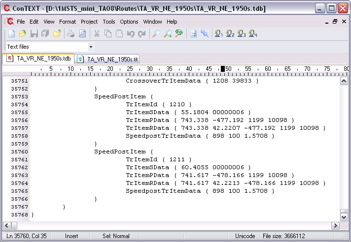
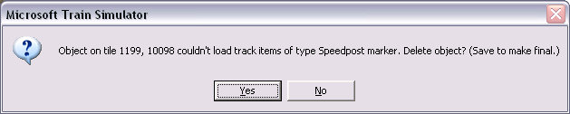

Here we have two tracks crossing at grade - in fact they are two a1t1000r10d.s shapes laid one over the other. If left as such, there will be no protection of this crossing and approaching trains may well collide.
Start by backing up your route.
In Route Editor, start by placing a speed post where the two tracks cross. This will create two SpeedPostItem elements and link each TrVectorNode to the speed post by a TrItemRef element.
Save changes and quit Route Editor.
Using your favourite unicode-aware editor (ConTEXT is used in these screenshots), open the two track database files, route.tdb and route.tit and scroll to the bottom, thus: as they are the last added items, you'll find them at the bottom of the file: here we have the .TDB and the .TIT files:

We're going to make a few changes to both nodes in both files.
- Change SpeedPostItem to CrossoverItem : in two places in the two files;
- Change the "6" in the TrItemSData to a "2". If this is not done the signals will not be enabled by the dispatcher;
- Delete the complete line containing TrItemPData;
- Change SpeedpostTrItemData to CrossoverTrItemData: in two places in the two files; if this is not done then the crossing will not be protected by the signals;
- The first parameter of the CrossoverTrItemData element is the TrItemId of the other pair of the crossing. The second parameter is a track shape. Choose the number of a crossing track and it will use the ClearanceDist defined for that track shape in the global tsection.dat file. Also place this track shape somewhere on your route so that Route Riter will produce a correct list of track shapes used by your route.
Save your changes. You should have both the .tdb and .tit files looking something like this:
Now let's have a look at this diamond crossing in Activity Editor. Crossing nodes are visible, protecting this diamond.
Now if you want to be really fussy, you can adjust the position of the nodes by altering the first parameter of the TrItemSData element, eg TrItemSData ( 155.18 00000002 ), where 155.18 is the distance in meters from the start of the trackvector. This number could be changed for both entries so the two nodes are on top of each other and then appear as one. In this instance, moving the first node from 155.18 to 155.30, the second from 160.405 to 160.90 has the nodes one on top of the other (the distance moved, 12cm and 49cm respectively indicates that the nodes were still within the track gauge and moving them was a waste of time).

Ok, now let's open Route Editor. As you open it, you may see an error message like this:

If you do, simply answer "yes" and continue. The Speedpost entries will be deleted in the World files. This will make changes irreversible. Answer "No" if you may want to convert the crossing node back to a speedpost for deletion with Route Editor.
Now place your signals, save and quit Route Editor.